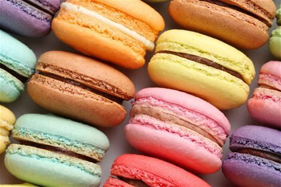

🇫🇷 French Macarons

Macarons are delicate French cookies made from almond flour, egg whites, and sugar, filled with a rich variety of buttercream, ganache, or jams. Famous for their pastel colors and smooth domes, they are a symbol of French patisserie perfection and elegance.
🧂 Ingredients
- 1 cup powdered sugar
- ¾ cup almond flour
- 2 egg whites (room temperature)
- ¼ cup granulated sugar
- Food coloring (optional)
- Buttercream, ganache, or jam for filling
👨🍳 Instructions
- Step 1: Sift together almond flour and powdered sugar.
- Step 2: Beat egg whites until foamy, then gradually add sugar and beat until stiff peaks.
- Step 3: Fold the dry mixture into egg whites carefully until batter flows like lava.
- Step 4: Pipe into small circles on parchment paper and let rest 30 mins before baking.
- Step 5: Bake at 150°C (300°F) for about 15 mins. Let cool, then sandwich with filling.